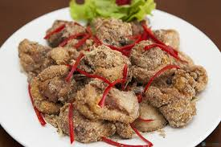

Thịt vịt rang muối

- Khẩu phần 4
- Chuẩn bị 15 phút
- Thực hiện 20 phút
Nguyên liệu
- 1,2 kg thịt vịt
- 1 trái lê, ép lấy nước
- 1 củ hành tím, băm nhỏ
- 1 thìa súp sả băm
- 1 thìa súp muối
- 1 thìa cà phê tiêu
- ½ thìa súp Hạt nêm từ Thịt Thăn, Xương Ống
và Tủy - Bổ sung Vitamin A
- Dầu để chiên
Hướng dẫn thực hiện
- - Thịt vịt làm sạch, xát rượu và gừng để khử mùi hôi, chặt miếng vừa ăn.
Ướp vịt với Hạt nêm từ Thịt Thăn, Xương Ống và Tủy - Bổ sung Vitamin
A, tiêu, để thấm khoảng 15 phút, cho nước ép lê vào ướp thêm 5 phút
- - Bắc chảo dầu nóng, cho thịt vịt vào chiên ngập dầu, để lửa nhỏ. Khi
thịt dần chuyển sang màu vàng, thả 1 phần sả và hành tím vào, chiên tiếp cho
thịt vàng, vớt ra để ráo dầu
- - Lấy chảo khác, cho ít dầu vào phi thơm sả băm, nhắc xuống
- - Làm nóng lại chảo dầu đã chiên vịt, nhúng vịt trở lại lần 2 để vịt khô
và se giòn, vớt ra để ráo. Vẩy muối và tiêu vào thịt vịt đã chiên cho muối
bám đều thịt. Cho thịt vào chảo dầu phi sả, lắc đều trên lửa nhỏ khoảng 5
phút, cho ra đĩa.